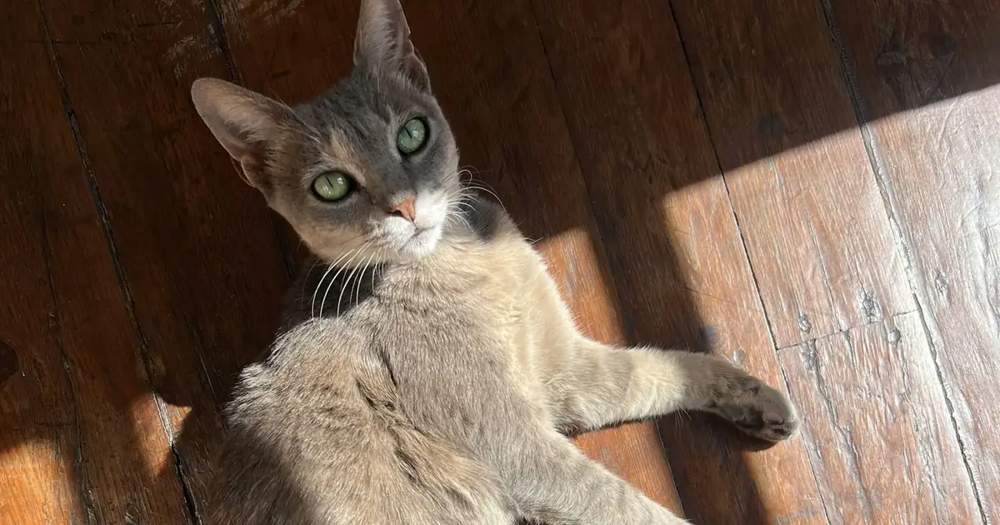

Can cats eat raisins? The short answer
- No. Raisins, grapes, currants, and sultanas should never be fed to cats.
- No safe amount is known. No toxic dose has been established for cats, so even one raisin is treated as an emergency.
- Kidney injury has been reported in cats, though far fewer cat cases are on record than dog cases.
- Call now, do not wait for signs. Your vet or ASPCA Animal Poison Control at (888) 426-4435 can tell you whether your cat needs to be seen.

Enter your cat's weight and how many raisins or grapes are missing to get an urgency level and a dose estimate to share with your vet.
Can 1 raisin kill a cat?
No one can promise that a single raisin is harmless to a cat. No toxic dose has been established for cats, and there are too few published cat cases to say how much is dangerous. Dog data show why the amount is not a reliable guide: kidney injury has been reported after as few as 4 or 5 grapes in a small dog, while other dogs ate far more with no signs at all. Nobody can predict which animal will react.
That is why the answer to "my cat ate one raisin" is the same as for a handful: call your vet or ASPCA Animal Poison Control at (888) 426-4435 now, even if your cat seems completely normal. Early care is simple. Treating kidney failure is not.
If your cat ate a raisin or grape: what to do right now
- Move your cat away and pick up any remaining raisins, grapes, or food that contains them.
- Estimate how many are missing, and note the time and your cat's weight.
- Call your veterinarian or an animal poison control center now.
- Do not try to make your cat vomit at home. Home remedies such as hydrogen peroxide or salt are not safe for cats. If vomiting is needed, the vet will do it.
- Keep the package or recipe if it was bread, cookies, granola, or trail mix.
Raisins in cats vs dogs: what is different
Most of what is known about raisin and grape poisoning comes from dogs. Here is how the picture for cats differs:
| Dogs | Cats | |
|---|---|---|
| How well documented | Well documented. Many case series since ASPCA Animal Poison Control first alerted vets in 2001. | Much less documented. Merck Veterinary Manual describes anecdotal reports of kidney failure in cats with no published case reports; the UK Veterinary Poisons Information Service has described two cats with acute kidney failure. |
| Toxic dose | No reliable dose. Some dogs react to a few grapes, others eat much more with no signs. | None established. Any amount is treated as an emergency. |
| Proposed cause | Tartaric acid, proposed but not proven. ASPCA and Merck note dogs are poor at clearing it from the kidneys. | Not known whether the same mechanism applies to cats. |
| What studies saw | In a 2022 Dutch poison center study, 14 of 95 dogs got sick and 1 developed kidney injury. | In the same study, 2 of 13 cats got sick (vomiting and similar signs) and none developed kidney injury. Thirteen cats is too few to show that cats are safe. |
| How exposure happens | Often by gulping fruit, raisin bread, or trail mix. | Less common, since most cats are not interested in fruit, but cats can lick, bat, or chew raisins, especially in baked goods. |
| Home vomiting | Only if a vet or poison control tells you to. | Do not try it at home. The vet uses cat-safe medicines. |
Signs to watch for
- Vomiting or diarrhea
- Not eating
- Lethargy or hiding
- Drinking and urinating more, or much less, or not at all
- Weakness or dehydration
In dogs, vomiting often starts within 6 to 12 hours, and kidney failure can follow within 24 to 72 hours (Merck Veterinary Manual). Calling before signs appear gives your vet the best chance to prevent harm. Go straight to an emergency vet if your cat is vomiting repeatedly, stops eating, is very lethargic, or is urinating much less, or if your cat already has kidney disease.
What the vet may do
If the raisin was eaten recently, the vet may make your cat vomit using a cat-safe medicine; in the Dutch study, vomiting was induced in 7 of the 13 cats. Depending on the amount and your cat's health, the vet may also recommend IV fluids and blood tests to check kidney values over the next few days. For more detail, see My cat ate grapes or raisins: what to do now.
Where cats find raisins
- Raisin bread, cinnamon rolls, bagels, and hot cross buns
- Cookies, muffins, granola, cereal, and trail mix
- Holiday baking such as fruitcake, stollen, and mince pies
- Lunch boxes, snack bags, and dropped fruit, especially in homes with dogs and kids
Related: My cat ate grapes or raisins, My dog ate grapes or raisins, the dog grape and raisin calculator, Cat lily poisoning, holiday hazards for pets, and the pet poison-proofing checklist.
Enter weight and amount to get an urgency level and next steps.
Frequently asked questions
Can cats eat raisins?
No. Do not give raisins or grapes to a cat, even as a treat. Raisins and grapes are well known to cause kidney failure in dogs, and kidney failure has also been reported in cats. No safe amount is known for cats, so if your cat ate any, call your vet or ASPCA Animal Poison Control at (888) 426-4435 now.
Can 1 raisin kill a cat?
Nobody can say that one raisin is harmless. No toxic dose has been established for cats, and there are too few published cat cases to know how much is dangerous. In dogs, kidney injury has followed as few as 4 or 5 grapes in a small dog, while other dogs ate far more with no problem, so a small amount is not a reliable sign of safety. If your cat ate even one raisin, call your vet or ASPCA Animal Poison Control at (888) 426-4435 now.
Should cats eat raisins?
No. There is no reason to feed raisins to a cat and a real chance of harm. Keep raisins, grapes, currants, sultanas, and foods made with them, such as raisin bread, cookies, granola, and trail mix, out of reach.
Can cats have raisins in small amounts, like a bite of raisin bread?
Treat it the same as a whole raisin. Any amount is treated as an emergency because no safe amount is known. Call your vet or poison control and have the package or recipe ready so they can tell how many raisins were in it.
Are raisins as dangerous for cats as for dogs?
It is not known. Grape and raisin kidney injury is well documented in dogs. In cats the evidence is much thinner: Merck Veterinary Manual describes anecdotal reports of kidney failure, the UK Veterinary Poisons Information Service has described two cats with acute kidney failure, and a 2022 Dutch poison center study of 13 cats found that 2 got sick and none developed kidney injury. Less data does not mean less risk.
My cat ate a raisin but seems fine. Can I wait and watch?
No. In dogs, kidney injury usually shows up 24 to 72 hours after eating grapes or raisins, often before you see obvious signs. Treatment works best early, often by having a vet make your cat vomit within the first hours. Call your vet or poison control now, even if your cat seems normal.